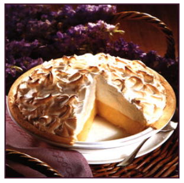

One 9-inch pie
30 Min - Prep time
10 Min - Cook time
40 Min - Total
8 Servings
INGREDIENTS
- 1 cup white sugar
- 2 tbsp all-purpose flour
- 3 tbsp cornstarch
- 1/4 tsp salt
- 1 1/2 cups water
- 2 lemons, juiced and zested
- 2 tbsp butter
- 4 egg yolks, beaten
- 1 (9 inch) pie crust, baked
- 4 egg whites
- 6 tbsp white sugar
DIRECTIONS
- Preheat Oven: Preheat oven to 350 degrees F (175 degrees C).
-
Make Lemon Filling: In a medium saucepan ...
- Whisk together 1 cup sugar, flour, cornstarch, and salt.
- Stir in water, lemon juice and lemon zest.
- Cook over medium-high heat, stirring frequently, until mixture comes to a boil.
- Stir in butter.
- Place egg yolks in a small bowl and gradually whisk in 1/2 cup of hot sugar mixture.
- Whisk egg yolk mixture back into remaining sugar mixture.
- Bring to a boil and continue to cook while stirring constantly until thick.
- Remove from heat.
- Pour filling into baked pastry shell.
- Make Lemon Filling: In a medium saucepan ...
- Whisk together 1 cup sugar, flour, cornstarch, and salt.
- Stir in water, lemon juice and lemon zest.
- Cook over medium-high heat, stirring frequently, until mixture comes to a boil.
- Stir in butter.
- Place egg yolks in a small bowl and gradually whisk in 1/2 cup of hot sugar mixture.
- Whisk egg yolk mixture back into remaining sugar mixture.
- Bring to a boil and continue to cook while stirring constantly until thick.
- Remove from heat.
- Pour filling into baked pastry shell.
- Make Meringue: In a large glass or metal bowl ...
- Whip egg whites until foamy.
- Add sugar gradually, and continue to whip until stiff peaks form.
- Spread meringue over pie, sealing the edges at the crust.
-
Bake: Bake in preheated oven for 10 minutes, or until meringue is golden brown.
This is our favorite recipe here at Granny's Pies. It has been enjoyed by pie fans for many years. It's Granny's favorite! We hope you'll find that this recipe is delicious and also easy to follow; it's a piece of cake pie!
USER COMMENTS
LINKS
Search for other lemon meringue pie recipes
Home
Copyright © 2012 Granny's Pies
A Granny's Pies Production
All rights reserved